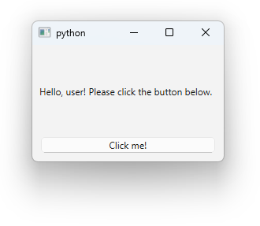
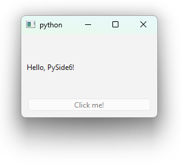

3. Connecting widgets to a function
To make a widget interactive, you need to connect it to a function. In PySide6 this is done using a signal-slot mechanism. A signal is emitted when a particular event occurs, and a slot is a function that is called in response to the signal. In PySide6, you can connect a signal to a slot using the connect method of the signal object.
Creating a slot function
The slot function doesn't take any arguments. To handle this, we can group all the widgets together with all slot functions in a single class. This way, we can access the widgets inside the slot function through the self reference. Assuming that the following code is inside a class in which a QLabel widget is defined as self.label, we can define a slot function as follows:
In the code above, we use the @Slot() decorator to indicate that the function is a slot. So, if we want to connect this slot function to the signal of the QPushButton in our simple_gui.py file, we first need to change up our code quite a bit. We can put all the code in a class that inherits from QMainWindow and let's call it UserInterface:
- With this line of code, we call the
__init__method of the parent classQMainWindow. In the without class case, we do this implicitly when we create theQMainWindowobject: - In this case, we use the
selfreference to access theQMainWindowobject. The equivalent line in the without class case is: - We give the
Qlabelto theselfreference so that we can access it in slot functions, which we will add later. The equivalent lines in the without class case are: -
We only execute the code if the script is run as the main program, not as an imported module. This is a common Python idiom
 .
. -
Equivalent lines in the without class case are:
In the code above the changes made to simple_gui.py are highlighted. Press the buttons for more information about specific lines of code.
Connecting the slot function to a widget
Now we can connect a slot function to the signal of a widget. Some relevant signals of QWidgets are mentioned in the API reference. We can for example connect the CurrentTextChanged signal of a QComboBox to a slot function as follows:
In the code above is assumed the the do_something slot function is defined in the same scope as the combobox object. In the same way, we can connect the clicked signal of a QPushButton to the change_label_text slot function in simple_gui.py:
Final Result
That's it ! You have succesfully created your first interactive GUI application using PySide6 . The final result of running simple_gui.py is shown below:

